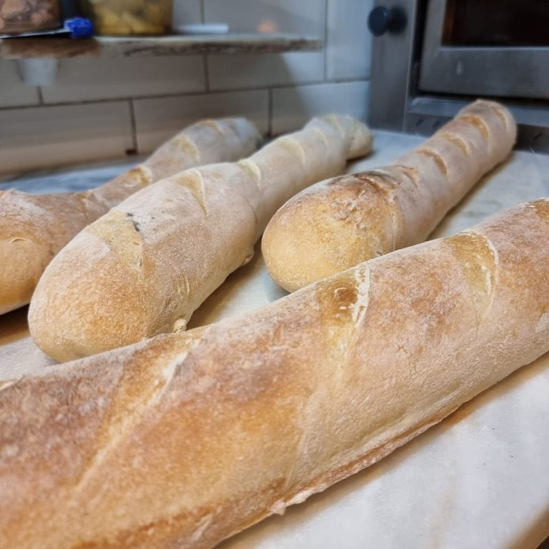
Elke dag vers deeg
Ons pizzadeeg maken we dagelijks vers. Van wat er overblijft bakken we stokbrood, en ook de focaccia bij de amuse maken we zelf.
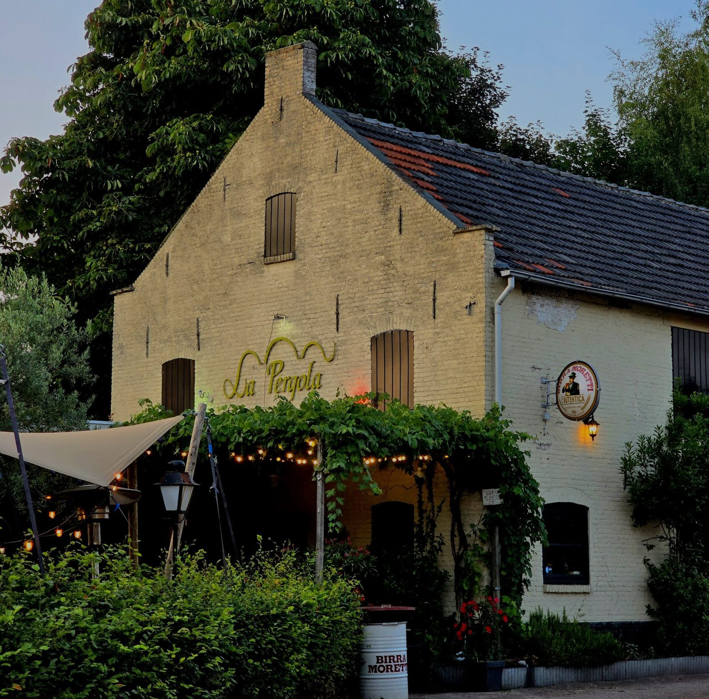
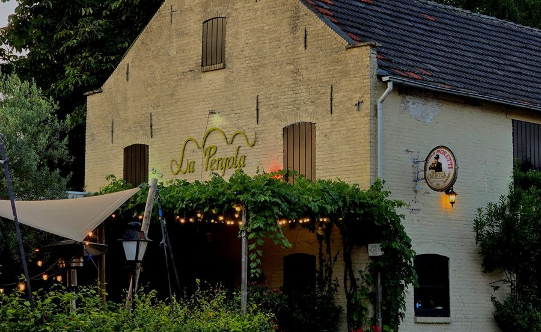
Klassiek Italiaans restaurant en pizzeria in Baarle-Nassau, sinds 1998. Elke dag vers pizzadeeg, pasta, vlees en vis, en Sardijnse specialiteiten die we zelf uit Sardinië halen.
Verse handgemaakte pizza's en pasta's, maar vooral ook vlees- en visgerechten. Bijna alles maken we zelf, van het deeg tot de worst.
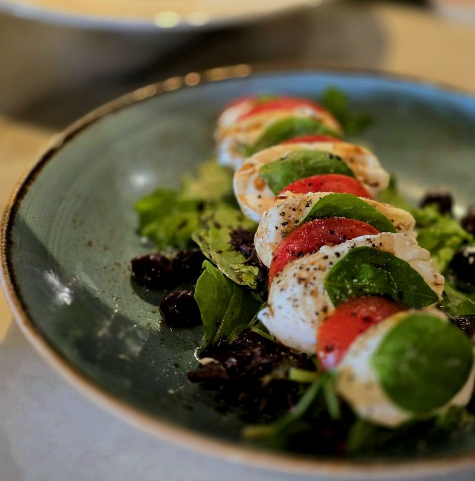
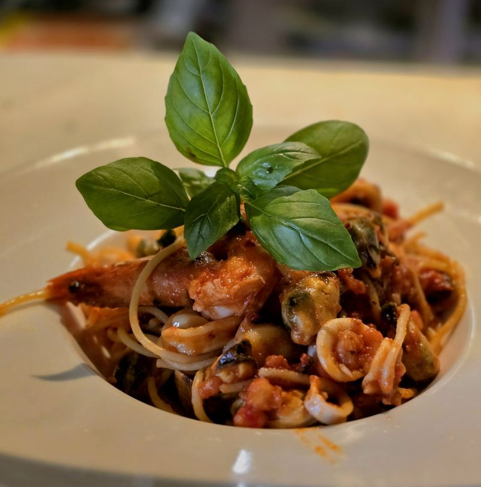
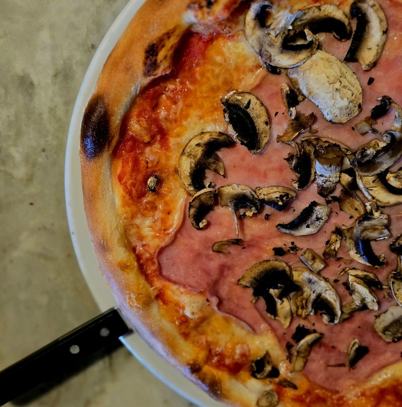
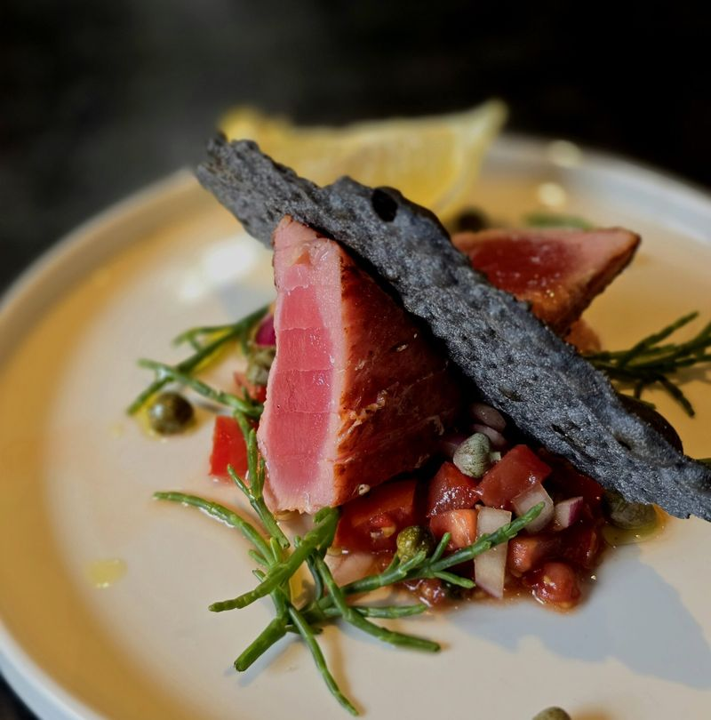
We koken volgens de klassieke Italiaanse keuken, de "cucina povera": niets weggooien en alles zelf maken.

Ons pizzadeeg maken we dagelijks vers. Van wat er overblijft bakken we stokbrood, en ook de focaccia bij de amuse maken we zelf.
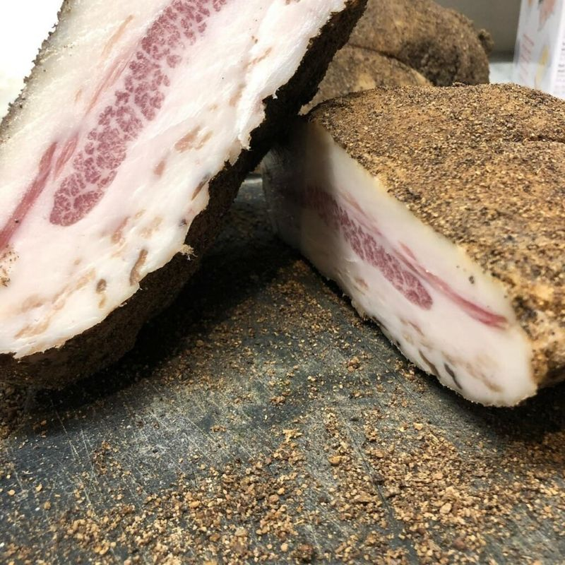
Elk jaar maken Renato en Gianni een partij pancetta: zelf gewassen, ingewreven en gehangen volgens het familierecept.
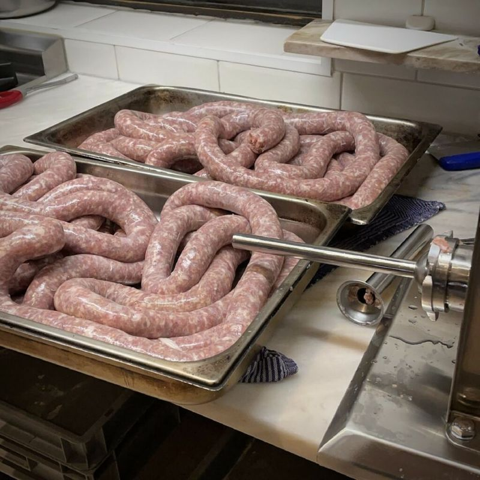
De verse worst in onze gerechten stellen we zelf samen volgens Sardijns recept, en draaien we ook zelf.
Op Sardinië heeft een van de Delogu-broers nog altijd de boerderij van opa en oma, met eigen olijfolie, wijn en Mirto. Een aantal keer per jaar halen we de Sardijnse specialiteiten daar zelf op. Méér Italiaans kun je je niet wensen!
Zo omschrijven onze gasten de sfeer het vaakst. We spreken iedereen het liefst bij de voornaam aan en maken graag een praatje aan tafel.
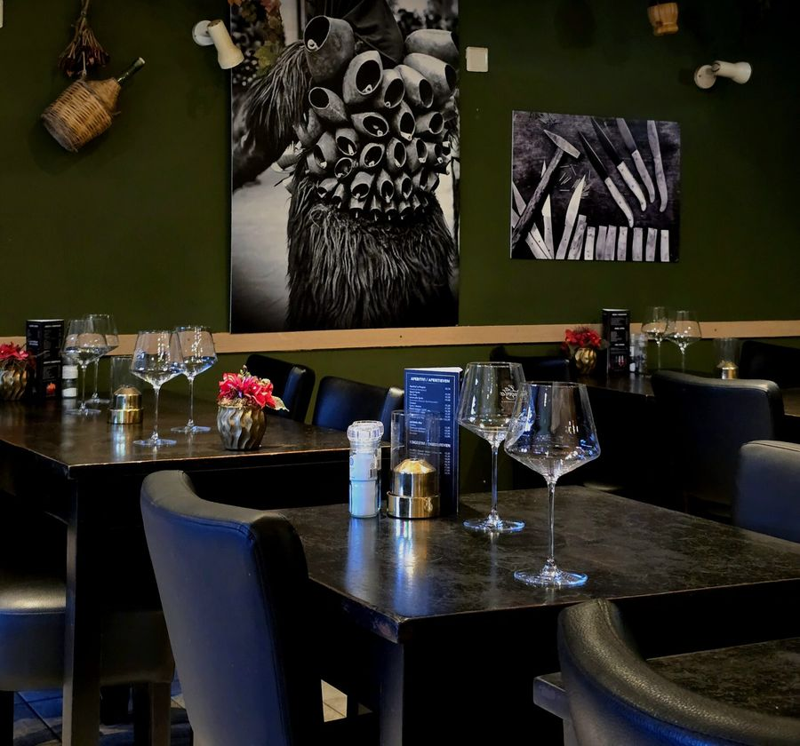
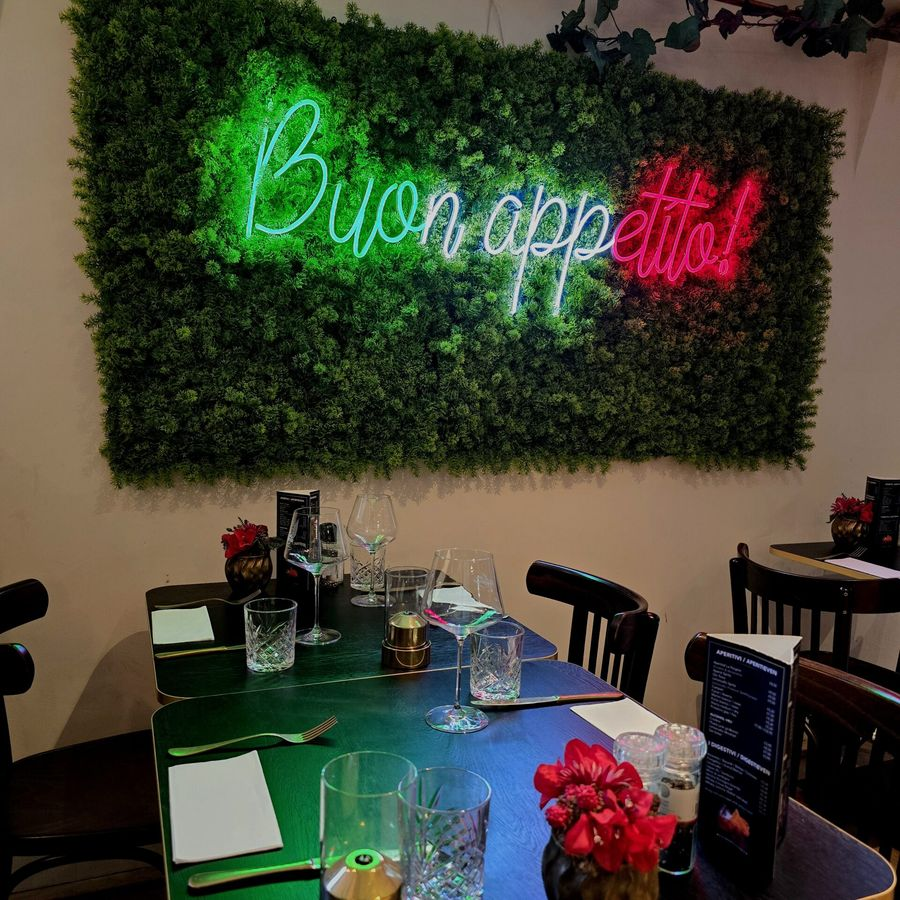
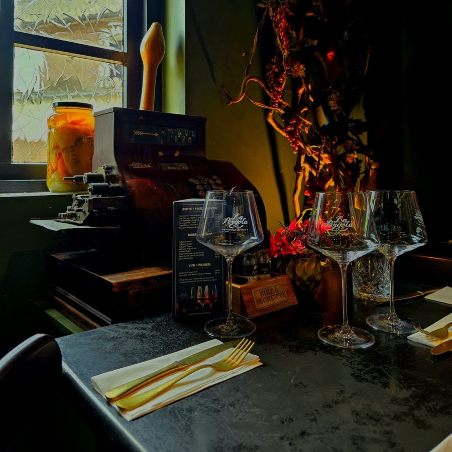
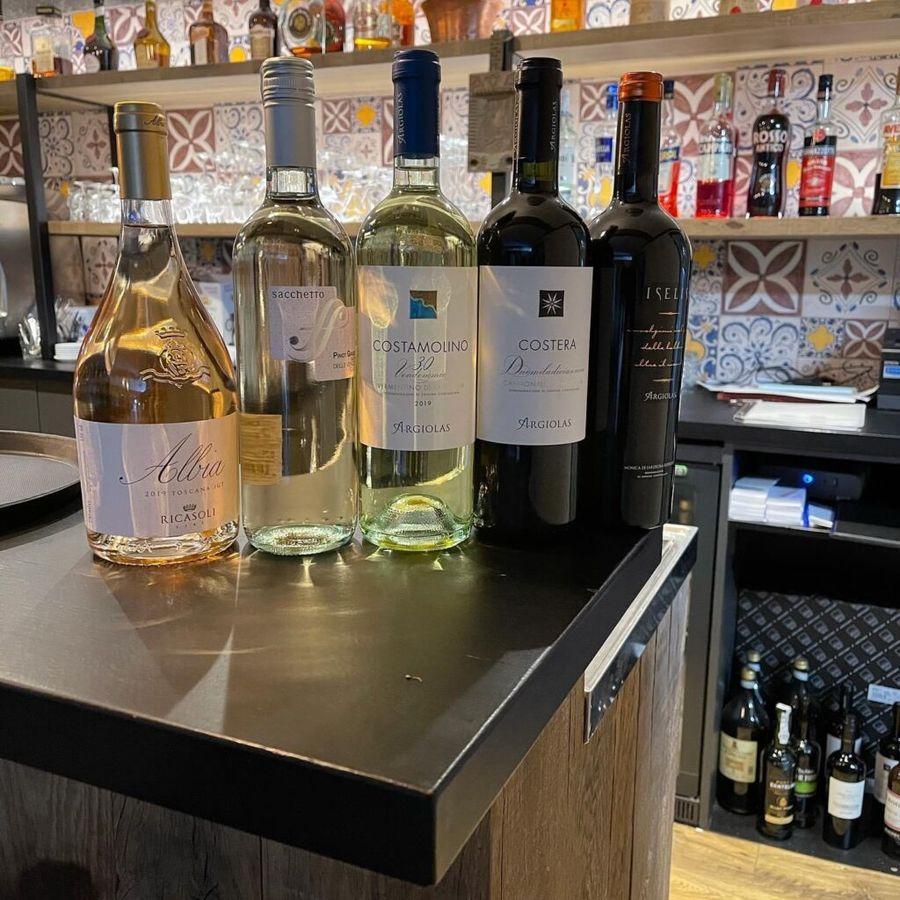
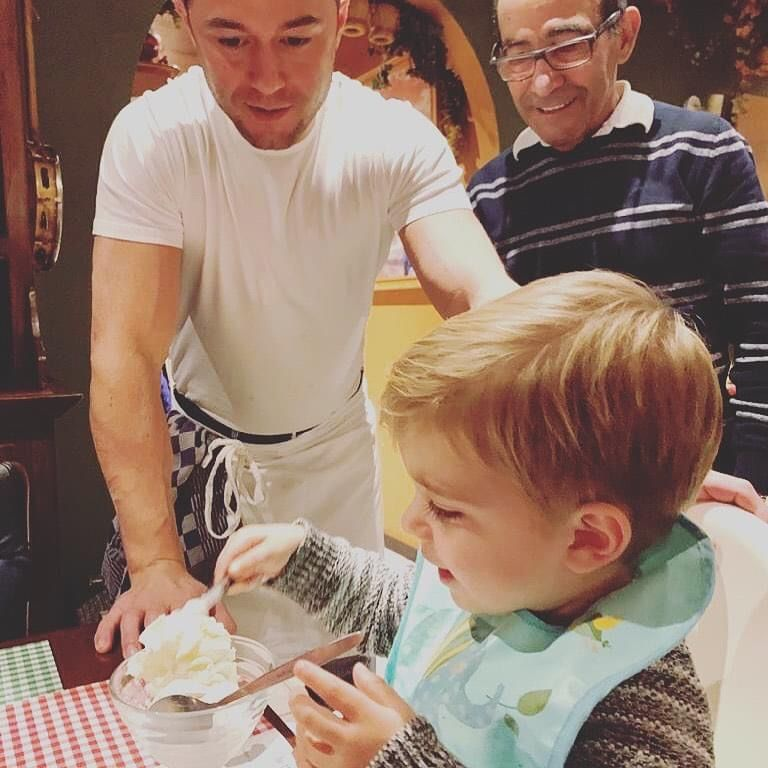
In 1998 begon Gianni met zijn droom: pizzeria La Pergola. Net als in Italië maakte hij alles vers, van het deeg tot de stokbroden. Zo werd hij een begrip in Baarle-Nassau en omstreken, en groeide de pizzeria uit tot het restaurant van nu.
Tegenwoordig staat zijn zoon Renato als chef in de keuken, gespecialiseerd in de klassieke Italiaanse en Sardijnse keuken. Het restaurant is niet groot, dus hij loopt nog graag even langs voor een praatje aan tafel.
"Non mangi per vivere, ma vivere per mangiare."We eten niet om te leven, maar leven voor eten.
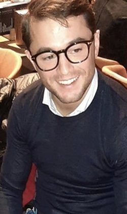
Renatochef-kok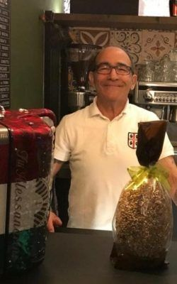
Giannibegon in 1998Bel ons, dagelijks vanaf 13.00 uur (behalve op dinsdag en woensdag). Reserveert u voor een andere dag? Stuur dan een WhatsApp.
Ristorante & Pizzeria
| Maandag | 17.00 - 22.00 |
| Dinsdag | gesloten |
| Woensdag | gesloten |
| Donderdag | 17.00 - 22.00 |
| Vrijdag | 17.00 - 22.00 |
| Zaterdag | 17.00 - 22.00 |
| Zondag | 17.00 - 22.00 |
Reserveringen via Facebook of andere chatberichten nemen we niet aan, om misverstanden te voorkomen.